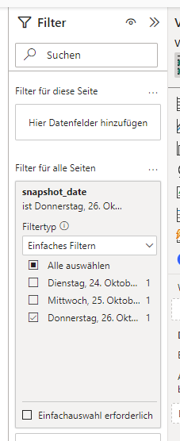
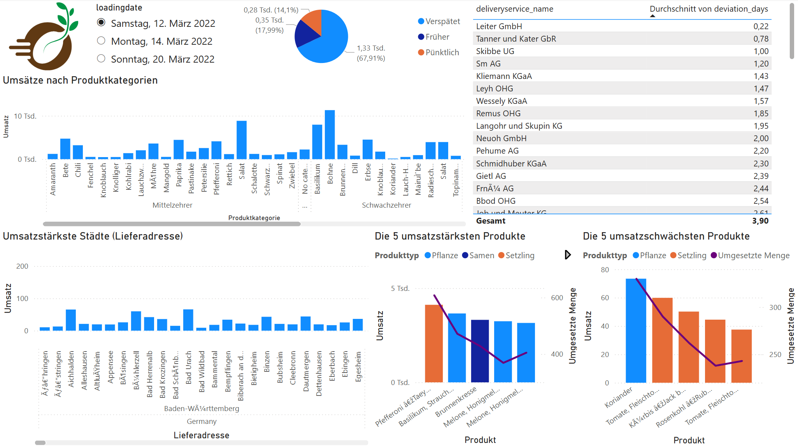

Übung Business Intelligence
Aufbau eines Dashboards
Aufgabe: Sternschema in Power BI laden
Installation von Power BI
Wir arbeiten mit Power BI Desktop. Dies ist auf den Labor-PCs bereits vorinstalliert. Für Ihre privaten Computer können Sie es hier herunterladen: Microsoft Store
Beim ersten Start verlangt Power BI nach einer Anmeldung. Diese kann einfach weggeklickt werden. Power BI funktioniert dann trotzdem.
Aufgabe: Sternschema in Power BI laden
DuckDB Power Query Connector installieren
Um auf Daten in der von uns genutzten DuckDB-Datenbank zuzugreifen, müssen Sie noch die entsprechende Power BI Extension installieren.
Die Installation ist hier beschrieben:
Power BI with DuckDB and MotherDuckAufgabe: Sternschema in Power BI laden
Verbindung zum Datenbankserver herstellen
- Stellen Sie nun eine Verbindung zu Ihrem Sternschema her.
- Dazu wählen Sie DuckDB in der Liste der abfragbaren Datenquellen aus.
- Wählen Sie dann den Speicherort Ihrer DuckDB-Datei:
~\dev_willibald_dwh.duckdb - Setzen Sie read_only auf true
- Als Datenkonnektivitätsmodus wählen Sie "Importieren".
Aufgabe: Sternschema in Power BI laden
Tabellen auswählen
Wählen Sie alle Tabellen und Views aus, die sich im Schema "willibald_ol_dm" befinden. Klicken Sie anschließend auf "Laden".

Training: Modell in PowerBI aufbauen
Microsoft bietet umfangreiche Trainingsmaterialien für PowerBI an. Deren Bearbeitung ist keine Voraussetzung für diese Übung, kann sich aber für jeden lohnen, der tiefer in die Welt der BI-Tools eintauchen möchte.
Aufgabe: Sternschema in Power BI laden
Beziehungen aufbauen
Die Fremdschlüsselbeziehungen vom Fakt zu den Dimensionen kann Power BI aufgrund der gleichlautenden Spaltennamen automatisch herstellen.
Wechseln Sie in die Modellansicht und werfen Sie einen Blick auf das entstandene Datenmodell.

Aufgabe: Sternschema in Power BI laden
Beziehungen zur Datumsdimension reparieren

Durch den Aufbau des Sternschemas sieht das automatisch angelegte Datenmodell gut aus.
Verbergen Sie der Übersichtlichkeit wegen die HKEY-Spalten in allen Tabellen.
Sie können außerdem den Namen der Fakten und Dimensionen anpassen (Datenbank- und Schemanamen entfernen)
Aufgabe: Sternschema in Power BI laden
Anlegen von Addresshierarchien

Legen Sie in beiden Dimensionen, welche Adressen enthalten, jeweils eine Hierarchie an. Und zwar in folgender Reihenfolge:
country - city - postal_code
Legen Sie außerdem eine Produktkategorienhierarchie an: supercategory_name - productcategory_name
Die in Hierarchien verwendenten Datenfelder können Sie anschließend ausblenden.
Aufgabe: Aufbau des Dashboards
Entwerfen und Implementieren Sie ein Dashboard, dass folgende KPIs übersichtlich darstellt:
- Wie verteilen sich die Umsätze auf die Produktkategorien?
- Welches sind die umsatzstärksten Städte (nach Lieferort)?
- Wie häufig werden Samen verspätet geliefert?
- Was ist die durchschnittliche Lieferzeitabweichung pro Lieferdienst?
- Welches sind die 5 umsatzstärksten und die 5 umsatzschwächsten Produkte?
Aufgabe: Aufbau des Dashboards
Umsetzungshinweise

Um korrekte Ergebnisse zu bekommen, muss die Auswertung immer auf genau ein Snapshotdatum gefiltert sein.
Erstellen Sie deshalb zuerst einen Filter für die aktuelle oder alle Seiten auf ein Snapshotdatum Ihrer Wahl.
Aufgabe: Aufbau des Dashboards
Beispiellösung

Ergebnis der Übung
- Dashboard erstellt analog zum Beispiel
- .pbix Datei in git eingecheckt im Ordner bis242ss250x (nicht in willibald_dwh!)